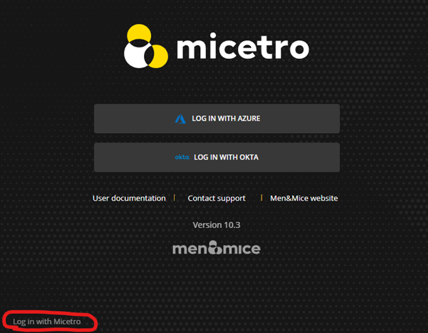

Integrating with Okta
Integrating Micetro with Okta can simplify the authentication process by providing Multi-Factor Authentication (MFA) and Single Sign-On (SSO) functionalities. After configuration, Micetro’s login page will include a button that, when clicked, directs users to Okta’s authentication URL, where they can complete the authentication process using their Okta credentials and gain access to Micetro without the need to enter their login credentials repeatedly.
Dependency Checklist
Configure and enable SSO and MFA in Okta.
Central must have internet access to Okta’s endpoints:
*.okta.com
Python with dependent libraries are installed on the Central server.
Python 3.7 or newer required.
okta_jwt_verifier >=0.2.3 - Verifies Okta access and ID tokens - okta-jwt-verifier · PyPI
requests - https://pypi.org/project/requests/
Note
If running Central in High Availability (HA) mode, it is recommended to disable the service on one of the partners. This will help ensure that the installation is successful on each server and prevent the servers from failing over during the installation process.
Installation and configuration must be performed on ALL Central servers in your environment.
Installation/Setup
To begin the configuration process, you’ll need to set up an application within Okta. This step will provide you with the necessary properties required for configuration.
To set up the application:
In the Okta Admin Console, go to Applications and select Applications.
Click Create App Integration on the Applications page.
Select OIDC - OpenID Connect as the Sign-in method.
Select Web Application as Application type.
Set Grant type to Authorization Code (default).
For Sign-in redirect URIs, enter: http://micetro-central-fqdn/mmws/auth_cb/okta
For Sign-out redirect URIs, use: http://micetro-central-fqdn/
- Okta Authorization Server
When configuring Okta, setting the server_id to default means that the Default Custom Authorization Server provided by Okta is used. Otherwise, the value should be the name of the Custom Authorization server that has been set up at Okta. If the Org Authorization Server is preferred, the server_id needs to be skipped or left empty.
- Group authorization
Both new identity solutions can be used in conjunction with group authorization models in Micetro.
Group membership synchronization operates by matching group names. Users are automatically added to groups within Micetro that correspond to groups listed by Okta, including both Active Directory (AD) and internal groups (excluding Built-in groups). Conversely, users are removed from groups within Micetro if their names do not match those listed by Okta. If Okta does not provide any groups, the user’s group membership remains unchanged.
Note
Okta offers options to filter and transform the provided groups during the application setup process.
- Mapping groups from Okta
To enable the mapping of group memberships from Okta, an ID Token Claim has been created with the name “groups”. To integrate this, include an OpenID Connect ID Token in the application configured as type “Filter”, and designated with the name “groups“.

Configuring Central Server
Install Python and dependent libraries and packages on the Central server.
- When installing Python please ensure the following:
Python is available to “all user” (Windows).
That you are using a ratified (tested by Men&Mice) version of Python (see dependency checklist)
Use Python version 3.7 or newer is installed in the “Default” environment.
Confirm that there is a directory called “extensions” in the Central data directory and that it contains a Python script named mm_auth_cb.py and a signature file. This Python script handles the authentication callback from the external provider. The same script serves both providers. The directory and files are created during the installation of Micetro Central.
Configuring Okta Authentication in the Micetro Web Interface
After completing the setup in Okta, the next step is to configure authentication in Micetro by entering the necessary information obtained during the application setup process. Once you have entered the information, save the configuration. Micetro will then test the integration with Okta to ensure it is working properly.
To configure and test the authentication:
On the Admin page, select the Configuration tab.
Select Authentication under System Settings in the left pane.
Make sure the Enable external login providers checkbox is selected.
Click Configure and select Okta in the dropdown list.
Fill out the configuration form with the information collected during the Okta setup process.
Domain: The domain of your Okta organization.
Server ID: The unique identifier for your Okta authorization server.
Client ID: A public identifier for your application, generated when you register your application with Okta.
Client secret: A confidential string known only to the application and the authorization server. It’s used to authenticate the identity of the application to Okta when requesting tokens. The Client Secret should be kept secure and not shared publicly.
Redirect URI: This should match the redirect UI configured in Okta.
Scope (optional): Scopes define the level of access that the client application is requesting from the user during the authentication process.
Audience URI: Specifies the intended recipient of the access token.
{kind=link}
When you’re finished, click Save and Test. Micetro will attempt to authenticate via the service and display a success message or a log explaining any failures encountered during the process.
Optional. If you want to provide only SSO/MFA login, you can disable the internal login method. This will remove the local login from the Micetro login page. However, you can still bypass this restriction at login. The internal login method can be found by clicking Log in with Micetro in the bottom left corner of the login page.
For more information about login options in Micetro, see Authentication.
{kind=link}
User Authentication and Access Management
Upon first login using Okta, a new user account is created in Micetro, categorized as “External”. Subsequent logins synchronize external changes to the user’s email, full name, and group memberships by matching the external ID.
It’s important to note that external user accounts authenticated via Okta and those integrated with AD-integrated SSO are treated as distinct entities within Micetro, each with its distinct user profile.
By default, all external users are automatically added to the “All users (built-in)” group. If group memberships are included in the properties returned by Okta, Micetro will add users to groups with matching names.
Micetro ensures synchronization of several key properties including email, full name, and group memberships. Any external changes to these properties are updated in Micetro upon subsequent logins.
Note
Despite the automatic addition of new External accounts during initial login, administrators must manually grant access to the DNS/DHCP/IPAM roles.
Failure to grant privileges for these new external accounts will result in an error for the user.

Manual Configuration via a Config File
Instead of using the Micetro Web Interface (see above), it is possible to configure external authentication manually by creating a JSON configuration file in Central’s data directory. The structure of the JSON object inside the configuration file is unique for each customer depending on the identity solution that is being configured.
For more information on configuring external authentication manually, see the documentation for version 10.3. You can find detailed instructions in the section titled: Single Sign-On (SSO) and Multi-Factor Authentication (MFA).